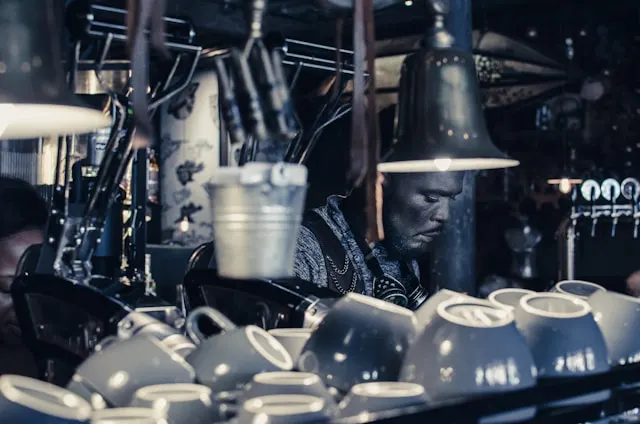
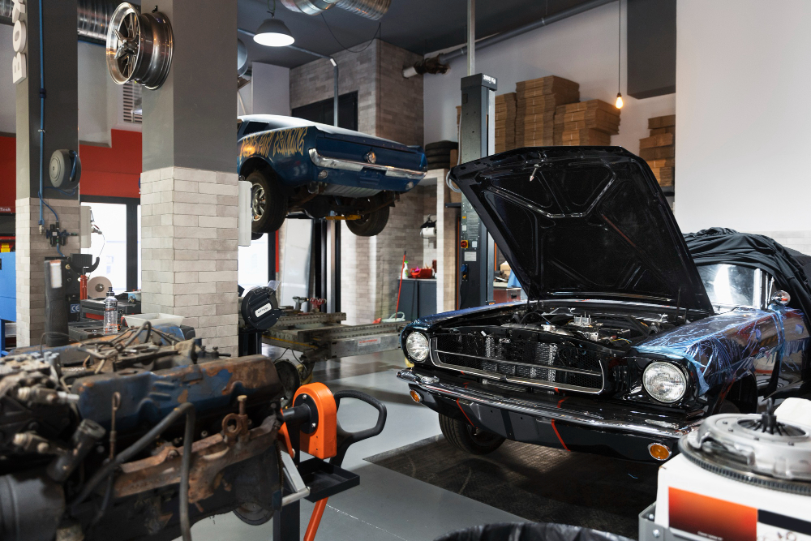

Performance. Precision. Passion.
We are specialists in Asian vehicle maintenance and tuning.

FOUNTICS Garage — Performance, Passion & Technical Expertise
Based in Kinshasa, DRC, we specialize in Japanese automotive brands, blending advanced diagnostics with motorsport-grade precision.

Performance Tuning
Boost your engine’s power with motorsport-grade precision.

Engine Diagnostics
Pinpoint issues fast using cutting-edge diagnostic tools.

Routine Maintenance
Keep your vehicle running smoothly with regular checkups.
Our Garage Location in Kinshasa
We are located in Kasa-Vubu Municipality, Kinshasa, DR Congo.